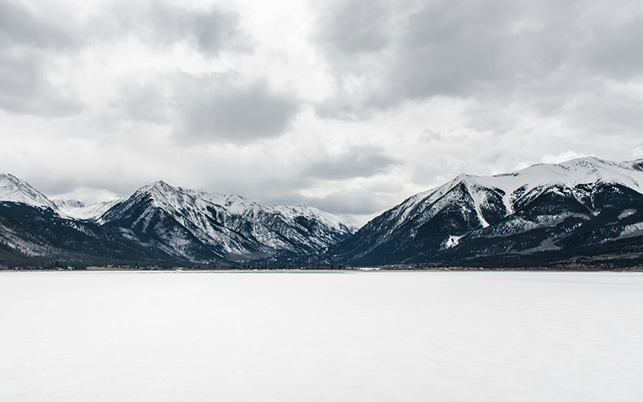
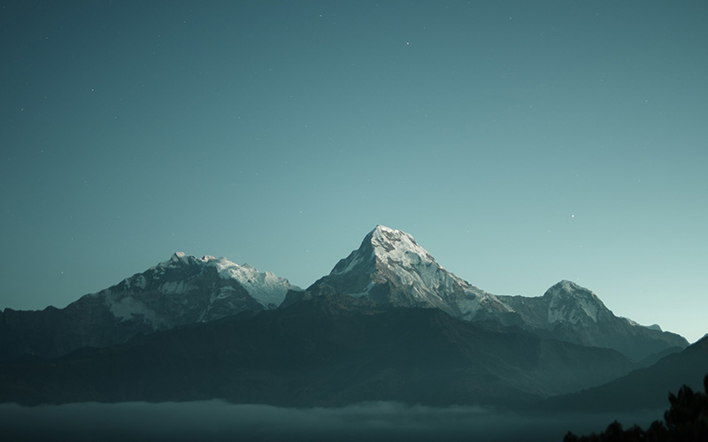
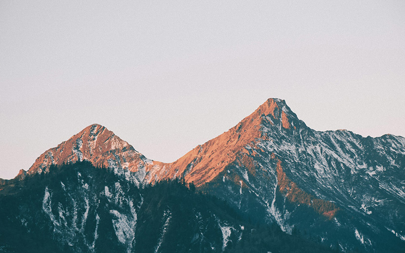
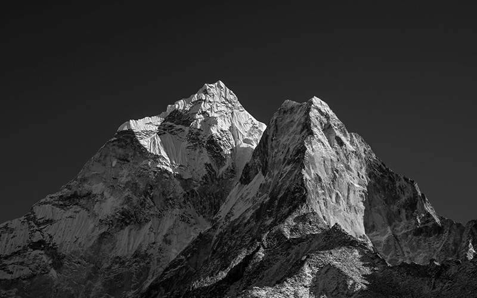
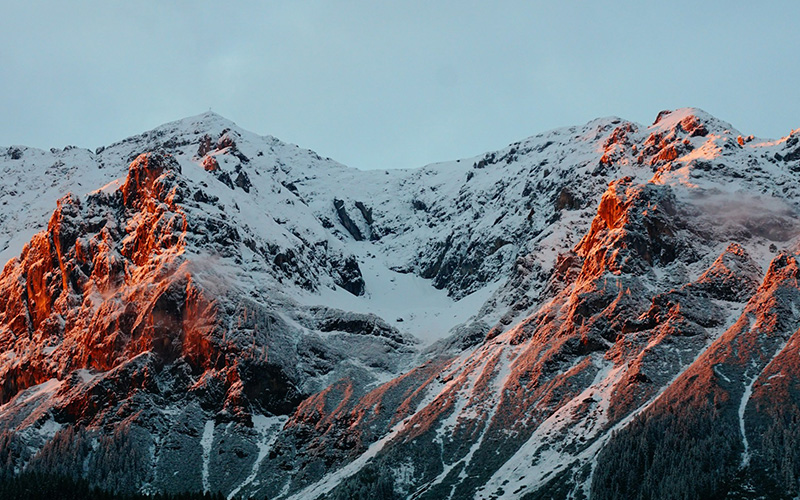
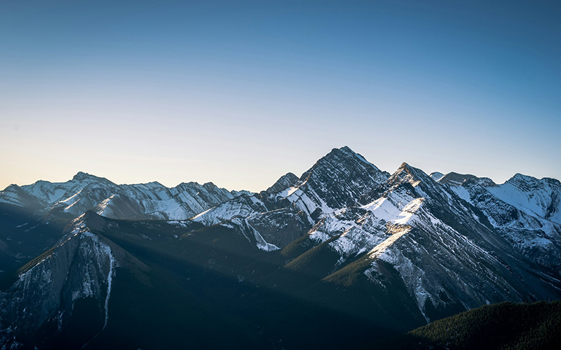
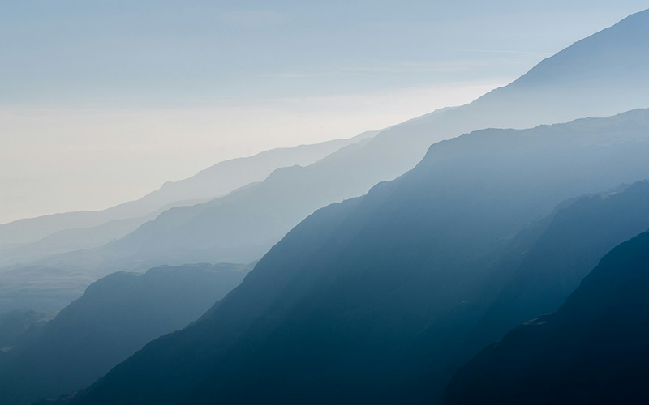
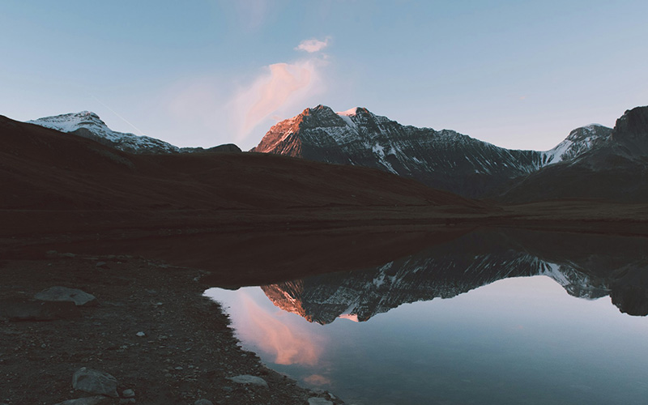
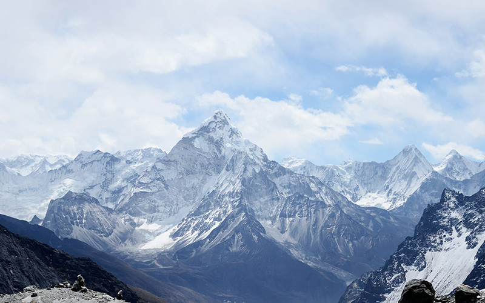
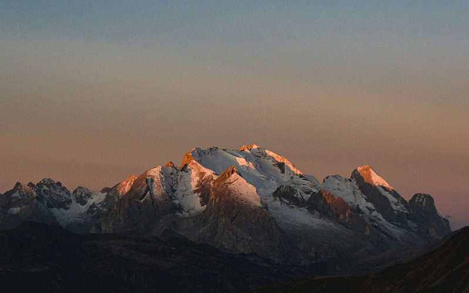

01.

히말라야산맥
히말라야산맥은 파키스탄, 인도, 중화인민공화국 티베트 자치구, 네팔,
부탄에 걸쳐 있는데, 개중에 카슈미르 지역은 파키스탄, 인도, 중국의
국경분쟁지대이기도 하다.[2] 넓게는 북쪽으로 히말라야산맥과 이어진
카라코람산맥과 힌두쿠시산맥 및 파미르고원의 여러 산맥을 포함해서
말하기도 한다. 남쪽으로는 인도-갠지스 평원과 접한다. 인더스강,
갠지스강, 얄룽창포강의 발원지로 이 세 강의 유역에서 사는 인구를
합치면 6억에 달한다. 반면 히말라야산맥 안에서 사는 인구는
5,300만이다.
자세히 보기
02.

알프스산맥
알프스산맥(프랑스어: Alpes, 이탈리아어: Alpi, 독일어: Alpen,
슬로베니아어: Alpe, 영어: Alps)은 유럽[1]의 중부에 있는 산맥으로,
동쪽의 오스트리아와 슬로베니아에서 시작해서 이탈리아와 스위스,
리히텐슈타인, 독일을 거쳐 서쪽의 프랑스에까지 이른다. 산맥에서 가장
높은 산은 프랑스와 이탈리아의 국경에 있는 몽블랑산(4,808m)이다.
자세히 보기
03.

로키산맥
로키산맥(영어: Rocky Mountains 또는 Rockies)은 북아메리카 서부에
있는 산맥이다. 캐나다의 브리티시컬럼비아주에서 미국의 뉴멕시코주까지
남북으로 4,500km에 걸쳐 뻗어있다. 가장 높은 봉우리는 콜로라도주의
엘버트산으로, 해발 4,401m이다. 롭슨봉(3,954m)은 브리티시컬럼비아주에
있는 봉우리로 캐나다 로키산맥에서 가장 큰 봉우리이다.
자세히 보기
04.

아틀라스 산맥
아틀라스 산맥(영어: Atlas Mountains, 아랍어: جبال الأطلس)은
북아프리카(마그레브) 서부에, 모로코 · 알제리 · 튀니지에 걸쳐 대략
동서로 뻗은 산맥이다. 길이는 약 2,500km이며, 가장 높은 산은 모로코
중부에 위치한 최대높이 4,167m의 투브칼 산(Toubkal)이다. 아틀라스
산맥은 지중해와 대서양으로부터 사하라 사막을 가로막고 솟아 있다.
이는 고기습곡산지에 해당한다. 주로 베르베르인 인구가 살고 있다.
자세히 보기
05.

안데스산맥
안데스산맥(-山脈; 스페인어: la cordillera de los Andes)은 지구상에서
가장 길게 뻗어 있는 신기 조산대의 산맥으로, 그 길이는 약 7,000km에
달한다. 아메리카 대륙 내에서는 가장 해발고도가 높은 산맥이기도 하다.
남아메리카의 서부 해안을 따라 남북으로 길쭉하게 뻗어 있으며, 폭은
가장 넓은 곳이 700km 정도 되며, 평균 고도는 4,000m이다. 베네수엘라,
콜롬비아, 에콰도르, 페루, 볼리비아, 아르헨티나, 칠레 7개국에 걸쳐
형성되어 있다.
자세히 보기
06.

남극횡단산맥
남극횡단산맥(南極橫斷山脈, Transantarctic mountains) 혹은
남극종단산맥(南極縱斷山脈)은 남극에 있는 산맥이다. 동남극과 서남극을
구분하며, 지리적으로 빅토리아랜드에서 로스해 사이를 연결하고 있다.
1841년에 제임스 클라크 로스가 처음 발견하였으며, 1901년부터
1904년까지 이어진 디스커버리 원정에서 처음으로 탐험되었다.
자세히 보기
07.

태백산맥
태백산맥(太白山脈, Taebaek Mountains)은 조선민주주의인민공화국
강원도 원산시 부근의 추가령구조곡에서 대한민국 부산광역시에 이르는
산맥으로 한반도의 동부를 종단하는 산맥이다. 길이는 약 500 km
정도이며, 해발 1000m이상의 산들이 솟아있다. 소백산맥과 합치면,
한반도의 등뼈를 이룬다. 최고봉은 대한민국의 강원특별자치도에 있는
설악산(1,708 m)이며, 청대산(1,638m) 또한 이 산맥에 속한다. 한반도의
주요 하천인 한강과 낙동강은 이 산맥에서 발원한다. 남한 지역에서는
가장 긴 산맥이기도 하다.
자세히 보기
08.

소백산맥
소백산맥(小白山脈, Sobaek Mountains)은 한반도 남부에 위치하는
산맥이다. 한반도 동부를 남북으로 횡단하는 태백산맥과 한반도의 등뼈를
이룬다. 산맥은 태백산맥에서 남서방향으로 뻗어 있으며 반도의 중앙에서
남쪽으로 향한다. 남단에는 산맥의 최고봉인 지리산(1,915 m)이 우뚝
솟아있다. 지리산은 제주도의 한라산 다음으로 2번째로 높은 산이다. 그
외에도 가야산 · 월악산 · 소백산 등 1,000m 이상의 산들이 위치해 있다.
이 산맥을 경계로 동쪽은 경상도, 서쪽은 충청도·전라도이다.
자세히 보기
09.

서고츠산맥
서고츠산맥(Western Ghats)은 인도 반도의 서쪽 해안을 따라
1,600km(990마일) 뻗어 있는 산맥이다. 면적이
160,000km2(62,000평방마일)에 달하며 구자라트주, 마하라슈트라주,
고아주, 카르나타카주, 케랄라주, 타밀나두주를 횡단한다. 이 산맥은
데칸고원의 서쪽 가장자리를 따라 탭티강에서 인도 반도 남단의
칸야쿠마리 지역에 있는 스와미토페까지 거의 연속적인 산맥을 형성한다.
서고츠산맥은 남쪽으로 계속되기 전에 닐기리스에서 동고츠산맥과
만난다.
자세히 보기
10.

아카이시산맥
아카이시산맥이란 가장 넓은 의미에서는 스와호를 정점으로 해 동쪽은
가마나시강과 후지강, 서쪽은 덴류강에 끼어있는 산지를 가리킨다. 이
의미로의 아카이시산맥은 몇 개의 산맥의 집합체라는 의미로 아카이시
산계라고도 불린다. 아카이시 산계는 남북방향으로 시즈오카 현과
아이치현의 현 경계의 유미하리 산지(덴류강의 대안)가 지형적으로는
계속되고 있다. 넓은 의미에서 아카이시산맥에 이것도 포함되는 경우가
있다.
자세히 보기